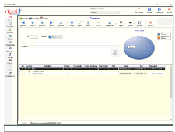

KO - el error se presenta luego de procesar el lote de operaciones relacionadas al proceso contable, dejando en evidencia la falta de ...
KO - el error se presenta luego de procesar el lote de operaciones relacionadas al proceso contable, dejando en evidencia la falta de ...
Imagen
Agregar Filtro-Proyectos
Proyecto
Último
Conciliacion Bancaria
23/07/2020 09:30:30
Conciliacion Bancaria
23/07/2020 09:30:30
Auditoría - Información complementaria
Proceso: Proceso
Computador: Computador
Id Proceso: 1
PID: 12356

KO - el error se presenta luego de procesar el lote de operaciones relacionadas al proceso contable, dejando en evidencia la falta de condicionales para efectuar la operacopm de forma correcta.
KO - el error se presenta luego de procesar el lote de operaciones relacionadas al proceso contable, dejando en evidencia la falta de condicionales para efectuar la operacopm de forma correcta.